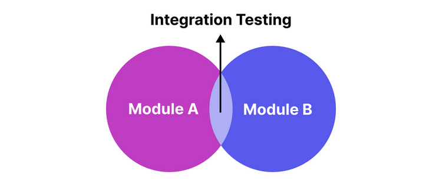

Unit Testing vs Integration Testing
Together but not mixed
"Quality is never an accident; it is always the result of intelligent effort."
- John Ruskin
“Program testing can be used to show the presence of bugs, but never to show their absence!”
- Edsger W. Dijkstra
“Discovering the unexpected is more important than confirming the known.”
- George E. P. Box
"Quality is not an act, it is a habit."
- Aristotle
“If you're not failing, you're not trying hard enough.”
- Martin Fowler
Agenda
- Testing in the SLDC
- Concepts
- Unit testing
- Integration testing
- Shapes of pyramids of testing
- Testing and Generative AI
- Live code demo
Testing in the SLDC
Approximately 40-50% of the total software development project lifecycle cost involves testing, which is in line with industry software cost models.
Tim Crumbley (NASA)Question: Do you invest half your Sprint time in testing?
- Unit: Test 1 thing, alone
- Integration: Test a few things, together
- End-to-end (E2E): Test that everything works together (run the app)
Unit testing
 Source: https://martinfowler.com/bliki/UnitTest.html
Source: https://martinfowler.com/bliki/UnitTest.html
Unit testing
Unit testing is a type of software testing where individual units or components of a software are tested. The purpose of unit testing is to validate that each unit of the software performs as expected.
Integration testing
 Source: https://katalon.com/resources-center/blog/integration-testingIntegration testing
Integration testing is a type of software testing where the software is tested as a whole, to ensure that the different parts of the software work together as expected.
Integration tests test the plumbing and choreography of the components. (Uncle Bob Martin)